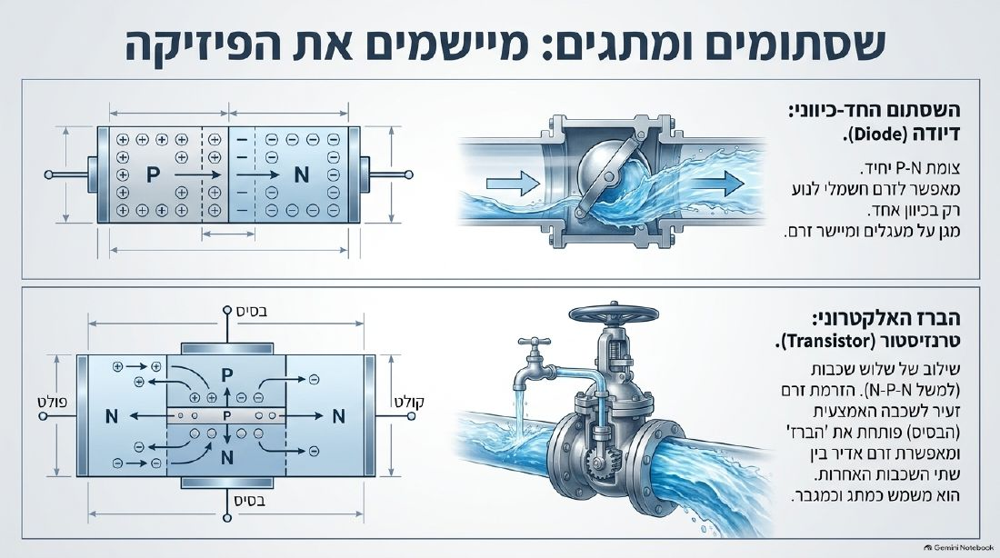
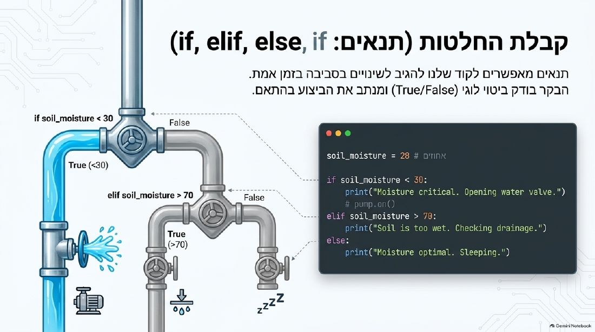
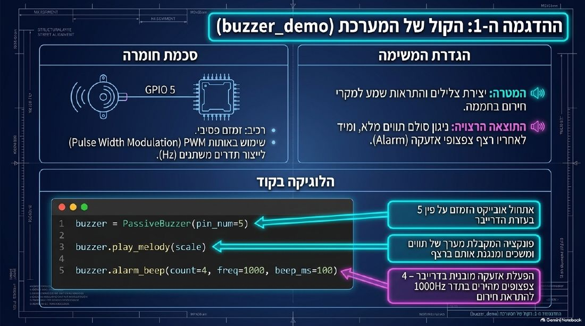
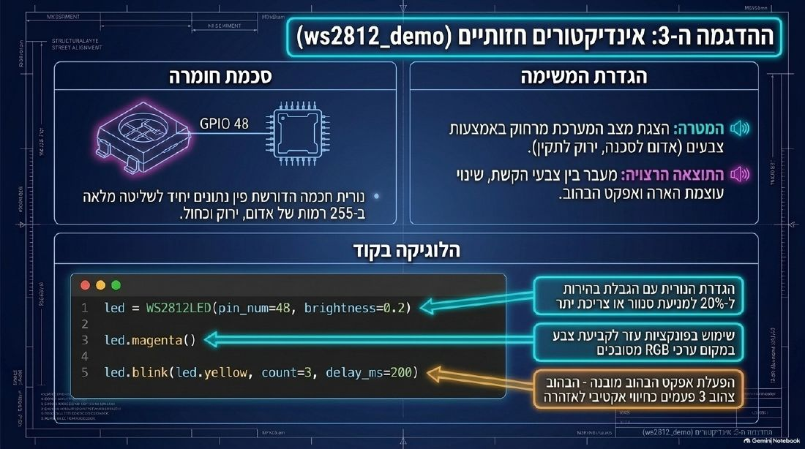

שיעור 7 – הצמח מפעיל מכונות!
🎯 מטרות השיעור
ידע ומושגים
- ✅ מסביר מתח (V) וזרם (mA) עם אנלוגיית המים
- ✅ מבדיל בין פין דיגיטלי לאנלוגי ויודע מתי להשתמש בכל אחד
- ✅ מבין למה נגד הכרחי עם LED
- ✅ מבין if / elif / else בפייתון – קורא קוד ומנחש פלט
- ✅ מכיר Beewise ומחבר לשיעור
מיומנויות קוד – 3 שלבים
- 🎮 שלב א' – גרירה: 6 בלוקי if/else לסדר נכון
- ✍️ שלב ב' – השלמת קוד פייתון: 30 / red / 90 / else / green
- 🔌 חיבור אמיתי: זמזם ל-GPIO 5 + חיישן הלחות ל-GPIO 6; נורית ה-RGB המובנית (GPIO 48) מגיבה לאדמה
🧰 ציוד לשיעור
⚡ ערכת ESP32 לקבוצה
- 📋 לוח ESP32-S3 (MicroPython + דרייברים) + כבל USB-C של נתונים
- 📋 חיישן לחות קרקע (משיעור 6)
- 📋 מודול זמזם פסיבי
- 📋 כבלי חיבור (Jumper)
- 📋 2 כוסות: אדמה יבשה + אדמה רטובה, וכוס מים לכיול
- 📋 (בונוס) Servo + 3 כבלים
- 🌈 נורית ה-RGB מובנית בלוח (GPIO 48) – לא צריך לחבר אותה ולא צריך נגד.
- 🧰 ערכת חומרה רזרבית אחת לכל כיתה (ESP32/חיישן/זמזם חלופיים) – למקרה תקלה
🐍 קוד MicroPython (Thonny)
import time
from soil_moisture_driver import SoilMoistureSensor
from ws2812_driver import WS2812LED
from buzzer_driver import PassiveBuzzer
soil = SoilMoistureSensor(pin_num=6)
led = WS2812LED(pin_num=48, brightness=0.2)
buzzer = PassiveBuzzer(pin_num=5)
input("1. Sensor in AIR, press Enter")
soil.calibrate_dry()
input("2. Sensor in WATER, press Enter")
soil.calibrate_wet()
last_alarm = 0
while True:
moisture = soil.read_percent()
print("Moisture:", moisture, "%")
if moisture < 30:
led.red()
if time.time() - last_alarm >= 3: # not every second
buzzer.alarm_beep(count=3, freq=1000, beep_ms=100)
last_alarm = time.time()
else:
led.green()
time.sleep(1)
💡 מריצים ב-F5. את ה-Enter של הכיול לוחצים בחלון ה-Shell של Thonny. בונוס: הוסיפו elif moisture <= 60: led.yellow().
⚙️ בונוס Servo (נתקו USB לפני החיבור!) – להוסיף לקוד:
from machine import Pin, PWM
servo = PWM(Pin(15), freq=50)
def valve(angle):
servo.duty_ns(500000 + angle * 2000000 // 180)
valve(0)
# inside the loop: valve(90) under "if", valve(0) under "else"
📐 חיבורים
💧 חיישן לחות קרקע (GPIO 6)
VCC → 3V3 · GND → GND · AOUT → GPIO 6
🔔 זמזם פסיבי (GPIO 5)
הרגל עם סימן + (מדבקה קטנה, לא תמיד ברורה) → GPIO 5 (PWM) · הרגל השנייה → GND. חיבור הפוך = צפצוף חלש יותר.
🌈 נורית RGB (GPIO 48)
מובנית בלוח – אין מה לחבר
⚙️ Servo בונוס (GPIO 15)
אדום→5V · חום→GND · כתום→GPIO 15
שליטה עם PWM(Pin(15), freq=50) – הקוד בלומדה, שלב 2
💧 כוסות המים והאדמה יציבות ורחוקות מהלוח ומהכבל.
🖼️ להמחשה: חשמל, זמזם, נורית ותנאים
מתוך מצגות ההדרכה של צוות החומרה – אפשר להקרין בכיתה




⏱ לוח זמנים – 90 דקות
🎤 פתיחה – אנלוגיית המים
🚀 פתח עם הניסוי:
הראה בקבוק מים + מיכל. "הבקבוק = סוללה. המים = חשמל. הלחץ = מתח. כמות המים שיוצאת = זרם." עכשיו הראה תמונה/סרטון של LED שנשרף מחיבור בלי נגד → "ראיתם? LED נשרף מהר. הנגד הוא הברז שמגביל." אל תחברו LED בלי נגד בכיתה בעצמכם – זה מסוכן/מבאיש ריח.
- • שקף: דיגיטלי (0/1) vs אנלוגי (0–65535 ב-MicroPython) עם דוגמה של מתג לעומת ווליום
- • שקף: פינים על הלוח – GPIO 6 (חיישן) / GPIO 5 (זמזם) / GPIO 48 (נורית RGB) / GPIO 15 (Servo, בונוס) / GND / 3V3
💬 דיון – Teaser מהשיעור הקודם
❓ שאלת הדיון:
🔗 זוכרים? שאלנו: "האדמה התייבשה מתחת ל-30% – ה-ESP32 צריך להדליק נורית אדומה ולצפצף. איך תכתבו את זה בקוד?"
"עד עכשיו ה-ESP32 רק קרא ודיווח. מה צריך לקרות כדי שהוא יפעל לבד?"
תשובה צפויה: חיבור ל"ידיים" – נורית, זמזם, ברז (Servo). זה מה שנבנה היום.
💻 לומדה – 7 שלבים זוגות
📋 שלבים:
- גשר – מתח=מים + שאלה
- מדריך חיבורים + פינים של ה-ESP32
- 🎮 גרירת 6 בלוקי if/else
- ✍️ השלמת קוד פייתון (30 / red / 90 / else / green)
- 💡 סימולטור LED
- 🐝 Beewise
- 🔌 פרויקט + נתונים
👨🏫 תפקיד המורה:
- • שלב 3: עזרו לתקועים – "מה קורה קודם?"
- • שלב 4: else בפייתון עומד בתחילת שורה (בלי הזחה) ומסתיים בנקודתיים
- • שלב 5: כפתור ✓ וגם Enter עובדים
- • Beewise: "כמה הם גייסו? $80M!"
🔌 פרויקט – החיישן מדליק נורית ומצפצף קבוצות
📋 6 משימות:
🚨 בעיות נפוצות:
- ⚠️ הלוח או החיישן מתחמם / ריח שרוף: מנתקים USB מיד, לא נוגעים ברכיב החם, בודקים קצר (3V3/5V ל-GND, או VCC/GND הפוכים) ועוברים לערכה הרזרבית
- הנורית לא נדלקת בכלל: הקוד לא רץ – בדקו את חלון ה-Shell (שגיאה? חיבור ל-Thonny?)
- הנורית תמיד אדומה / תמיד ירוקה: הכיול התבלבל – הריצו שוב: קודם אוויר, אחר כך מים
- הזמזם שקט: רגל + לא ב-GPIO 5, או השנייה לא ב-GND
- הזמזם חלש: הזמזם מחובר הפוך – הפכו את שתי הרגליים (+ ל-GPIO 5)
- ImportError: דרייבר חסר על הבקר – ערכה רזרבית + דיווח לרכז הטכני
- IndentationError: הזחה לא אחידה בקוד
💡 להעמקה:
"הבקר מצפצף שהאדמה יבשה – אבל אם אף אחד לא בכיתה, מי ישקה? מה צריך לחבר כדי שהמעגל ייסגר לבד?" → Teaser לשיעור 8.
🏁 נתונים + Teaser
📊 נתונים (2 דק')
מזינים % לחות + מה הנורית עשתה. הצג ממוצע.
🌿 עלים (1 דק')
הכרזה על לידרבורד. מי מגיע לרמה חדשה?
🔮 Teaser (2 דק')
"הבקר מצפצף שהאדמה יבשה – אבל אם אף אחד לא בכיתה, מי ישקה? מה צריך לחבר כדי שהמעגל ייסגר לבד?"
🐝 Beewise – רקע למורה
מי הם?
סטארטאפ ישראלי מבאר שבע (2018). מייסדים: שלושה ישראלים. גיוס: $80M. פעיל בארה"ב ובישראל.
בנו כוורת רובוטית שפועלת 24/7 – חיישנים → if/else → פעולה. בדיוק מה שהתלמידים בנו.
שאלות לדיון:
- "מה הם פתרו שחקלאים לא יכלו לפתור לפני?"
- "מה חיישן היית מוסיף?"
- "למה $80M ולא $80K?"
- "מה הקשר למה שבנינו היום?"
🌿 גיימיפיקציה – שיעור 7
♿ התאמות
🐢 תקועים בקוד
- • "מה קורה ראשון לפני שמחליטים?"
- • הדפסת בלוקים על נייר – גרירה פיזית
- • עבודה בזוגות
🚀 מתקדמים
- • חיבור Servo + קוד בונוס
- • "כתבו תנאי elif נוסף – נורית צהובה בין 30% ל-60%"
- • הסבירו לחבר
🌍 ריבוי שפות
- • if = אם · else = אחרת
- • elif = ואם לא – אז אם · red / green = אדום / ירוק
- • דיון קבוצתי בשפת האם
docs/hardware-esp32-phase2.md
📝 הערות לשיעור
נשמר אוטומטית